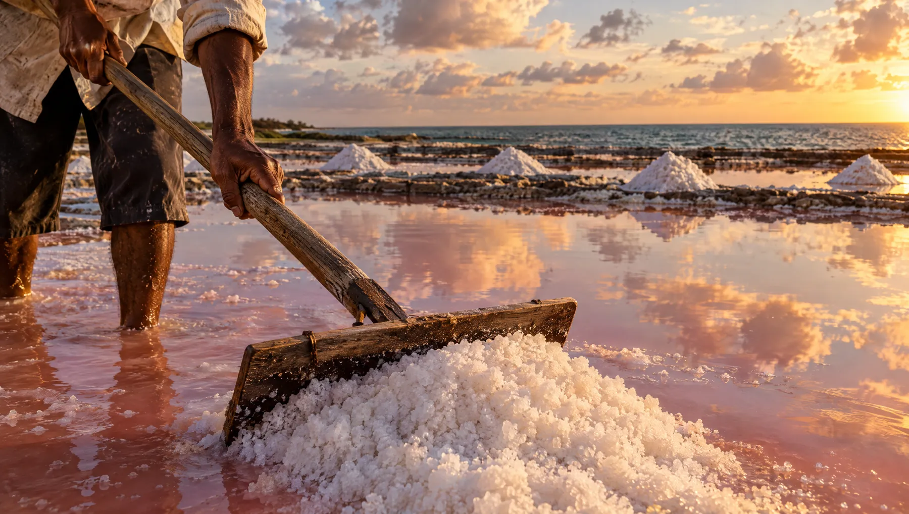
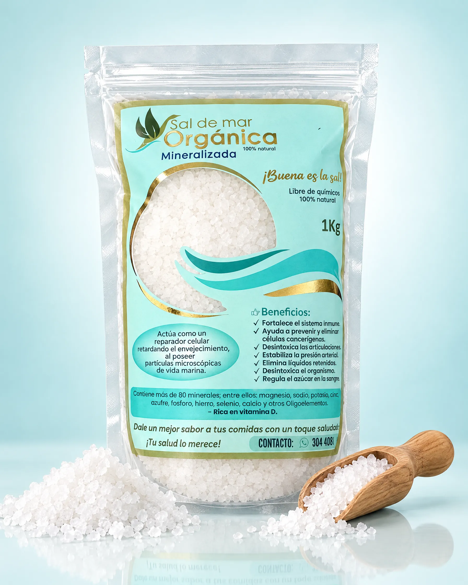
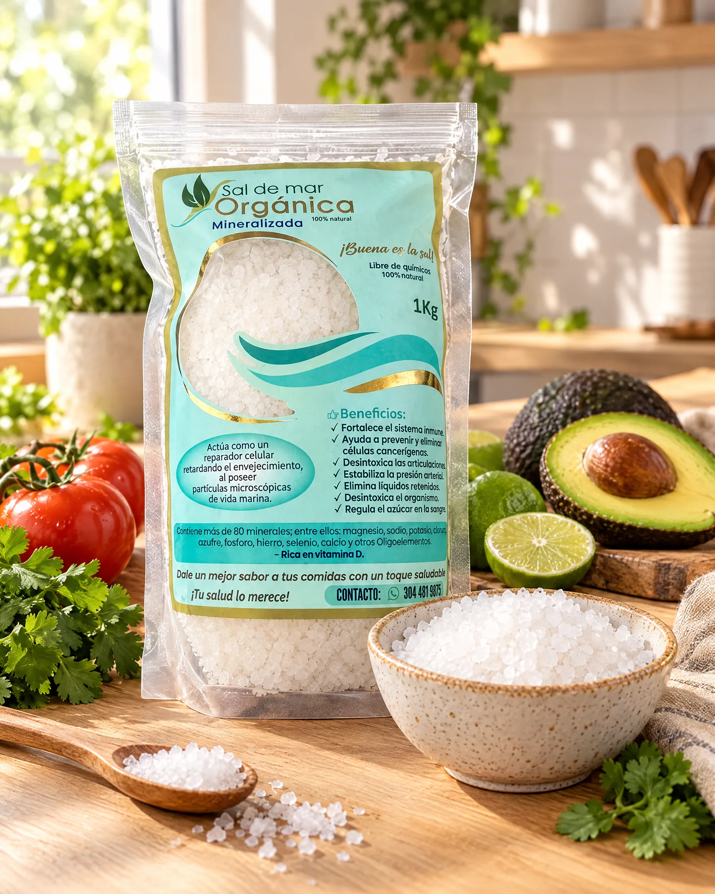

Pureza
Sal de mar sin refinar, sin blanqueadores, sin antiaglomerantes y sin aditivos. Nada más, nada menos.

Somos una empresa de Itagüí, Antioquia, que cree que la buena alimentación empieza por lo más básico: lo que pones en tu mesa todos los días.

Sal de Mar Orgánica nace en Itagüí, en el corazón del Valle de Aburrá, con un propósito sencillo: que las familias colombianas tengan acceso a una sal de mar real, sin refinar y libre de químicos, a un precio justo.
Durante décadas nos acostumbramos a la sal de mesa refinada: lavada, blanqueada y mezclada con antiaglomerantes hasta quedar casi solo en cloruro de sodio. Nosotros elegimos el camino contrario. Nuestra sal se obtiene por la evaporación natural del agua de mar con sol y viento, y la empacamos sin agregarle nada, para que conserve los minerales y oligoelementos que el mar le dio.
No es una moda. Es un regreso al origen: a los procesos naturales, al respeto por el mar y a una cocina con más sabor y más conciencia.
Por eso decimos, con orgullo: ¡Buena es la sal!
Sal de mar sin refinar, sin blanqueadores, sin antiaglomerantes y sin aditivos. Nada más, nada menos.
Un proceso que usa la energía del sol y del viento, y empaques resellables que reducen el desperdicio.
Te contamos qué es, de dónde viene y cómo la empacamos. Sin promesas exageradas, solo un buen producto.
Obtenida del mar por evaporación natural, el método más antiguo y limpio de producir sal.


“La salud empieza por lo básico: lo que consumes todos los días.”